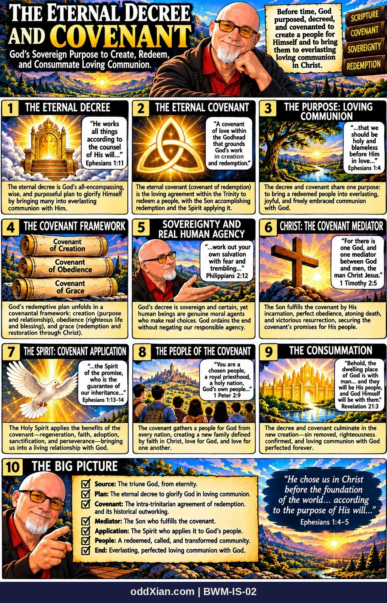

BWM-IS-02 · The Eternal Decree and Covenant

Publication derivative: the panel 2 caption typo of the original printing is corrected here, and the volume footer is added. The panel 2 bubble text is a summary statement of the plate, not a Scripture quotation.